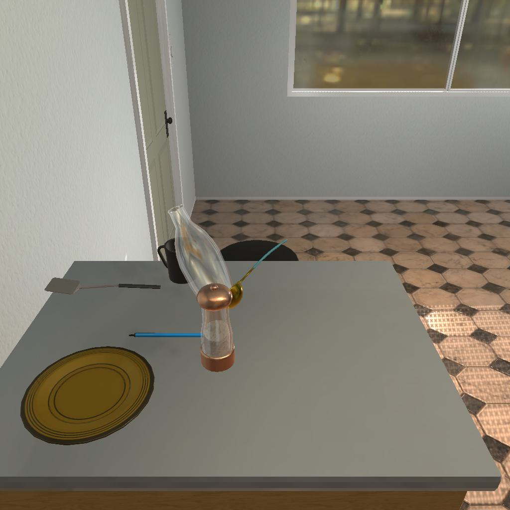

---------------------------------------------------------task: 22---------------------------------------------------------
--------------------------------------------------------------------------------------------------------------------------------------------------------------------
--------------------------------------------------------------------------------------------------------------------------------------------------------------------
Step:--------------------------------------------------------------------------11-------------------------------------------------------------------------------
----------------------------------------
VLM Prompt:
Image1:
Image2:
**Instruction**
1. Analyze the provided images to identify all visible household objects and compare the difference between images (e.h. whether the object is opened or not and taken on hand or not), focusing on those relevant to the task description "put a hot egg in countertop."
2. Use the analysis of images and the task hint "The agent must find an object of the desired type, pick it up, go to a microwave, heat the object with the microwave, then find the correct location to place it, and put it down there. The agent does not need to use the microwave button or open the microwave to heat the object, and the agent just needs to do action that is "heat the object with the microwave"." to answer the question: what is the most reasonable action in the choices for the task description "put a hot egg in countertop"?
3. Decide and write the answer using the template: The answer is: (i): , where i is the real number. If there is no desired object in images, search every place based on **Initial Observation** to find the object. And if no one is exactly correct, choose a similar answer.
**Initial Observation**
You are in the middle of a room. Looking quickly around you, you can see cabinet (1-18), countertop (1-4), sink (1), drawer (1-7), sinkbasin (1), coffeemachine (1), microwave (1), garbagecan (1), stoveburner (1-4), toaster (1), fridge (1)
**Answer Choices**
(1): go to cabinet 1
(2): go to cabinet 2
(3): go to countertop 1
(4): go to cabinet 3
(5): go to cabinet 4
(6): go to cabinet 5
(7): go to cabinet 6
(8): go to drawer 1
(9): go to drawer 2
(10): go to cabinet 7
(11): go to cabinet 8
(12): go to coffeemachine 1
(13): go to microwave 1
(14): go to cabinet 9
(15): go to countertop 2
(16): go to cabinet 10
(17): go to drawer 3
(18): go to drawer 4
(19): go to garbagecan 1
(20): go to drawer 5
(21): go to cabinet 11
(22): go to cabinet 12
(23): go to cabinet 13
(24): go to cabinet 14
(25): go to stoveburner 1
(26): go to countertop 3
(27): go to stoveburner 2
(28): go to stoveburner 3
(29): go to stoveburner 4
(30): go to drawer 6
(31): go to cabinet 15
(32): go to cabinet 16
(33): go to cabinet 17
(34): go to cabinet 18
(35): go to toaster 1
(36): go to drawer 7
(37): go to fridge 1
(38): take pan 1 from sink 1
(39): take cup 1 from sink 1
(40): take peppershaker 1 from sink 1
(41): take faucet 1 from sink 1
(42): take spoon 1 from sink 1
(43): take egg 1 from sink 1
(44): take kettle 1 from sink 1
(45): examine sink 1
**Answer**
Let's think step by step by following the instructions.
----------------------------------------
----------------------------------------
Original Response:
First, we analyze the provided images to identify all visible household objects. In Image 1, we can see a countertop with a plate and a spatula. There's also a glass bottle, but no visible egg. In Image 2, we see a sink with a cup, a spoon, and what appears to be an egg in the sink basin.
Now, comparing the difference between images, we focus on those relevant to the task description "put a hot egg in countertop." The egg mentioned in the task is visible in the sink in Image 2, and it is not being held or heated yet.
Given the task hint, the agent must find the egg, heat it with the microwave, and then put it on the countertop. Since the egg is visible in the sink, the agent does not need to search every place based on the initial observation. The agent just needs to take the egg and heat it.
Considering the provided answer choices, the most reasonable action for the task description "put a hot egg in countertop" is to first take the egg from the sink and then heat it with the microwave. The option to take the egg from the sink is present in the choices.
The answer is: (43): take egg 1 from sink 1.
----------------------------------------
----------------------------------------
>>> Refine Original VLM Response and Get Pure Action: take egg 1 from sink 1
----------------------------------------
-----------------------------------------------------------------
Running time: 9.89482569694519 seconds
Total Money: 11.270320000000002
-----------------------------------------------------------------
-----------------------------------------------------------------
Text Observation:You pick up the egg 1 from the sink 1.
-----------------------------------------------------------------
UNSUCCEED